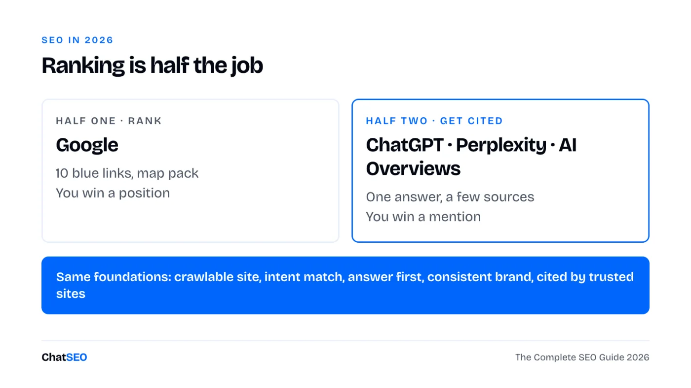
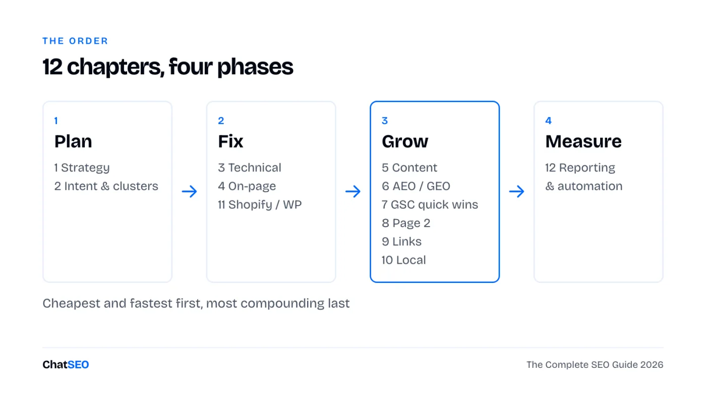
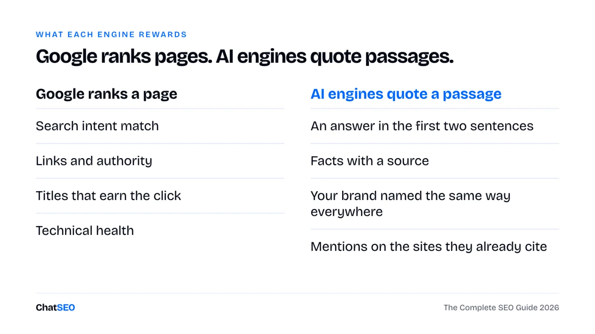
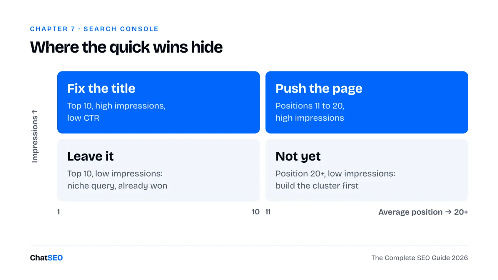
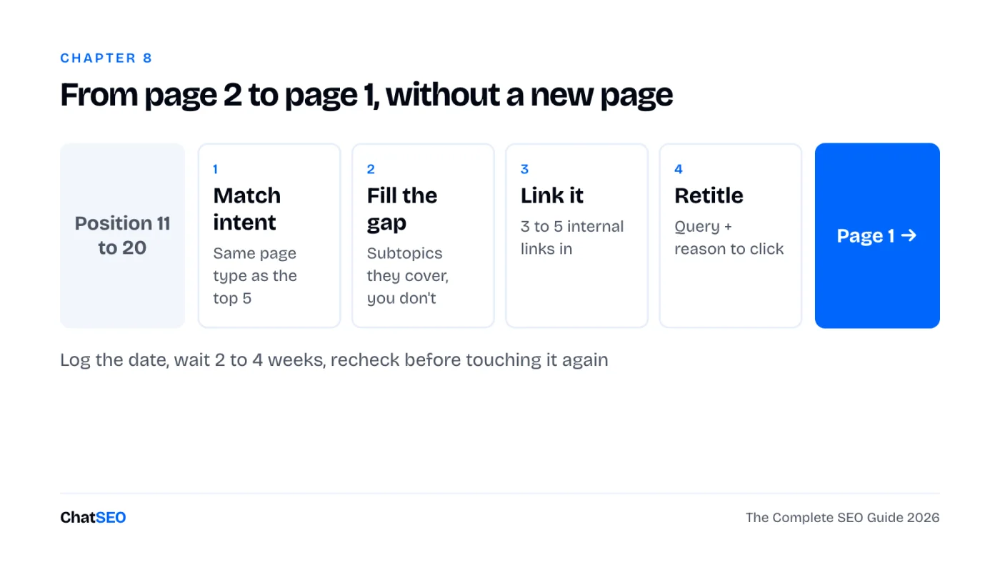

ChatSEO Playbooks / Free, nothing gated
The Complete SEO Guide for 2026
TL;DR
- Ranking on Google is half the job now. The other half is getting cited by ChatGPT, Perplexity and AI Overviews.
- Twelve chapters, from keyword prioritisation to Shopify, WordPress and reporting. Each has an audit checklist and the prompt that does the work.
- The fastest wins are in chapter 7 (Search Console quick wins) and chapter 8 (pages stuck on page 2).
- Then run it every week with the three workflows.

Ranking is half the job
Your buyers still search on Google. They also ask ChatGPT, Perplexity and the AI Overview at the top of the results, and those answers name a handful of sources. If you're not one of them, you don't exist in that answer.

The good news: both halves sit on the same foundations. A site Google can crawl, pages that match the intent and answer in the first lines, a brand named the same way everywhere, and mentions on the sites these engines already trust. This guide works through them in the order that pays back fastest.
The 12 chapters, in order

Only have an hour? Do chapters 7 and 8. They work on traffic Google already gives you, so they move fastest.
1SEO strategy and keyword prioritisation
Most SEO fails before the first keyword: no goal, no baseline, and a list of 300 keywords nobody can work through. Pick one business goal, take a dated snapshot, then rank keywords by what they can bring, not by volume alone.
Audit checklist
- One business goal per quarter (leads, sales, sign-ups), not "more traffic".
- A dated baseline: non-brand clicks, impressions, top 10 pages.
- Every keyword scored on three things: volume, how close you already rank, how close it is to a sale.
- A short list of 20 keywords you'll actually work this quarter.
Build my SEO baseline for [site URL], dated today, from Search Console (last 28 days vs the 28 days before): clicks, impressions and average position, split brand and non-brand, and the 10 pages bringing the most non-brand clicks. Then list the 20 keywords I should prioritise this quarter for [business goal: leads / sales / sign-ups], scored on volume, my current position and closeness to a sale. One table. Only use numbers from the data. If one is missing, say so.
2Search intent and topic clusters
A keyword is only worth targeting with the page type Google already shows for it. "Best X" wants a comparison, "X near me" wants a local page, "how to" wants a guide. Then group keywords into clusters: one pillar page and the supporting pages that link to it. Google and AI engines trust sites that cover a topic completely.
Audit checklist
- Every target keyword tagged with its intent: learn, compare, buy, local.
- Top 5 results checked before you decide the page type.
- One pillar per core service or product category, 5 to 15 supporting pages.
- No two pages targeting the same keyword (they split the clicks).
Map a topic cluster for [topic] on [site URL]: one pillar page and up to 12 supporting pages. For each: target keyword, search intent, the page type the top 5 results use, and whether a page already exists on my site (give the URL) or needs creating. Flag any two of my pages competing for the same keyword. Use real keyword and Search Console data only.

3Technical SEO: crawling, indexing, Core Web Vitals
You don't need a 200-line audit. You need the few issues that stop your important pages from being crawled, indexed or loaded fast. Search Console's Pages report and Core Web Vitals report tell you most of it for free.
Audit checklist
- Pages report: important URLs listed as "Indexed", none under "Excluded by noindex" by accident.
- Sitemap submitted, with only canonical, indexable URLs in it.
- No redirect chains or broken internal links on pages that carry traffic.
- Core Web Vitals: LCP under 2.5 s, INP under 200 ms, CLS under 0.1 on mobile.
- robots.txt doesn't block GPTBot, PerplexityBot or Google by accident.
Run a technical SEO check on [site URL]: indexing status of my top 20 pages, sitemap, robots.txt (including AI crawlers), redirects, broken internal links and Core Web Vitals on mobile. Return only the issues that affect pages bringing traffic, ranked by impact, with the fix for each. Do not list anything you cannot confirm from the crawl or Search Console.
4On-page: titles, meta descriptions, internal linking
The title is the one line that decides the click. The meta description is the second chance. Internal links tell Google which pages matter. All three can change this afternoon without writing a new page.
Audit checklist
- Title under ~60 characters, main keyword at the start, a reason to click at the end.
- Meta description under ~155 characters: what the page gives, who it's for, one proof.
- One H1 per page, matching the intent of the title.
- Every important page gets at least 3 internal links from related pages, with descriptive anchor text.
- No orphan pages (pages nothing links to).
TITLE [Main keyword]: [specific benefit or angle] ([year / number / proof]) e.g. Running Shoes for Flat Feet: 9 Pairs Tested on 300 km (2026) META DESCRIPTION [What the page gives] for [who]. [One proof or detail]. [What they can do next]. e.g. The 9 running shoes we tested for flat feet, ranked by support. Real mileage, real prices. Find your pair in 2 minutes.
Audit the on-page SEO of my 15 pages with the most impressions on [site URL]. For each: current title and meta description, the query bringing the most impressions, and a rewrite that matches it. Then list orphan or weakly linked pages and suggest 3 internal links for each, with the source page and anchor text. Show current vs proposed side by side. Wait for my approval before changing anything.
5Content that ranks and gets cited by AI
The same page has to do two jobs: satisfy the searcher well enough to rank, and contain passages an AI engine can lift and quote. Those passages are short, answer the question directly and carry facts with their source. Write the brief before the article.
Audit checklist
- The answer in the first two sentences under each heading, then the detail.
- Headings shaped like the questions people ask.
- Numbers with their source and date, a named author with real experience.
- Something the top 5 results don't have: your data, your test, your example.
- Old posts updated before new ones are written.
Target keyword: Search intent (learn / compare / buy / local): Reader: who they are and what they already know Page type the top 5 results use: The question this page must answer in its first 2 sentences: H2s (as questions): 1. 2. 3. What we add that the top 5 don't (our data, test, example): Facts to source: Internal links: from [pages] to this page, from this page to [pages] Call to action:
Write a content brief for [keyword] on [site URL] using the brief template: intent, the page type and H2s of the top 5 results, the questions people ask, what those results miss, and the internal links to add. Then review my existing page [page URL] against it and list what to change so it ranks and can be quoted by AI engines. Do not invent statistics.
6AEO, GEO and AI search visibility
AEO (answer engine optimisation) and GEO (generative engine optimisation) are the same idea: be the source an AI answer names. Start by measuring where you stand. Ask the questions your buyers ask, and see who gets named and which sites get cited.

Audit checklist
- 10 to 20 buyer questions about your category, written the way people ask an assistant.
- For each: is your brand named, which competitors are, which pages are cited.
- The sites cited again and again (directories, comparison sites, forums): get listed there.
- Brand name, offer and locations identical on your site and everywhere else.
- Re-check monthly. AI answers move faster than rankings.
Check my AI search visibility for [brand] in [category / city]. Write the 10 questions a buyer would ask an AI assistant, then report for each: whether my brand is mentioned, which competitors are, and which pages or sites are cited as sources. End with the 5 sources cited most often and what I'd need to appear on each. Only report what the results show.
Why a guide isn't enough. This page gives you the method, the filters and the prompts. It can't read your Search Console, crawl your site or check this week whether ChatGPT names you. ChatSEO does, on your real data, and pushes the fixes you approve to WordPress or Shopify. The first 7 days are free.

7Google Search Console: finding quick wins
A quick win is a page Google already shows but people don't click, or a query you rank for without a page built for it. Search Console has all of it, under Performance → Search results. Set the date to the last 3 months, tick all four metrics, then apply one filter at a time.

Filter 1 · Pages Google shows but nobody clicks. Pages tab, table filter Position smaller than 10, sort by Impressions. Any page with a CTR well under its neighbours needs a new title (chapter 4).
Filter 2 · Queries on page 2. Queries tab, table filter Position greater than 10, sort by Impressions. The top of that list is chapter 8.
Filter 3 · Question queries (material for FAQ blocks and AI-quotable answers). + New → Query → Custom (regex), "Matches regex":
^(how|what|why|when|where|which|who|can|does|do|is|are|should)\b
Filter 4 · Non-brand only (the traffic SEO actually earned). Query → Custom (regex), "Doesn't match regex", with your brand and its misspellings:
yourbrand|your brand|yourbrnd|yourbrand\.com
Filter 5 · Long-tail queries (five words or more: precise intent, easy to satisfy with one section). Query → Custom (regex), "Matches regex":
^(\S+\s+){4,}\S+$
Filter 6 · Pages losing clicks. Date → Compare → last 3 months vs previous period, Pages tab, sort by the clicks difference. Fix the biggest drops before writing anything new.
Find my Search Console quick wins for [site URL] over the last 3 months: (1) pages in the top 10 with a CTR well below their position, (2) queries in positions 11 to 20 with the most impressions, (3) question queries I rank for without a section that answers them, (4) pages that lost the most clicks vs the previous 3 months. Give me the 10 best opportunities in one table, each with the page, the query, the numbers and the one change to make. Use only Search Console data.
8Pages stuck on page 2 and how to push them
Position 11 gets almost nothing. Position 8 gets real clicks. A page sitting at 11 to 20 tells you Google already thinks it's relevant; it just needs a nudge. That nudge is almost never a new page.

Step by step
- Pick the page: positions 11 to 20, high impressions, query close to a sale (chapter 7, filter 2).
- Check intent: does your page type match the top 5? If they're lists and you have a product page, that's the problem.
- Find the gap: the subtopics and questions the top 5 cover that you don't. Add them as sections.
- Add 3 to 5 internal links from your strongest related pages, anchor text close to the query.
- Rewrite the title so it carries the query and a reason to click.
- Log the date and the position. Recheck in 2 to 4 weeks before touching it again.
Take my 5 pages on [site URL] with the most impressions in positions 11 to 20 (Search Console, last 3 months). For each: the main query, whether my page type matches the top 5 results, the subtopics they cover that I don't, 3 internal links to add from my stronger pages, and a new title. Order them by expected click gain. Show me the plan before changing anything.
9Link building and digital PR
Links still move rankings, and mentions decide which brands AI engines name. The best prospects already link to or mention your competitors. The best PR asset is a number nobody else has.
Audit checklist
- Sites linking to two or more competitors but not to you.
- Unlinked mentions of your brand: ask for the link.
- One piece of original data per quarter (a survey, your own stats, a test) others can cite.
- No paid link packages, no link farms.
Subject: [their article title] + one addition Hi [first name], I read [article title]. [One specific thing you liked, in one sentence.] You mention [topic]. We just published [your resource], with [the one fact or number they don't have]. If it's useful for your readers, it would fit right after "[their sentence]". Either way, thanks for the article. [Your name]
Find link prospects for [site URL] against [competitor 1] and [competitor 2]: sites that link to at least one of them and not to me, from real backlink data. Keep the 20 most relevant to [topic], drop spam and link sellers, and give me the linking page and a one-line outreach angle for each.
10Local SEO and Google Business Profile
If you serve a city, the map pack and your Google Business Profile often matter more than your website. The full method is in the Local SEO Playbook; here are the essentials.
Audit checklist
- Primary category set to the exact service you want to win, address in that city.
- Name, address and phone identical on every directory.
- A steady flow of reviews that mention the service and the city, every one answered.
- One page per service and city on your site, linked from the profile.
Audit my local SEO for [business name] in [city]: my Google Business Profile category, my position in the local pack for [main service] + [city], the consistency of my name, address and phone across directories, and whether I have a page per service and city. Rank the fixes by expected impact. Say "not found" where you cannot check something.
11Shopify and WordPress SEO
Both platforms rank fine. Each has a few defaults that quietly cost traffic.
Shopify checklist
- Product URLs: Shopify creates
/collections/x/products/ycopies. Check your theme links to the canonical/products/y. - Title and meta per product and collection, in "Search engine listing" at the bottom of each edit page.
- Collection pages get 100+ words of real intro text: they're often your best category rankers.
- Alt text on product images, written for what the image shows.
- Audit apps: each one can add scripts that slow every page.
WordPress checklist
- Settings → Reading: "Discourage search engines" unticked (the classic launch mistake).
- One SEO plugin only (Yoast or Rank Math), not two fighting over the same tags.
- Permalinks set to post name. Thin tag and author archives set to noindex.
- Caching and image compression on, so Core Web Vitals pass on mobile.
- Delete or merge old thin posts instead of leaving them indexed.
My site [site URL] runs on [Shopify / WordPress]. Check it against the common SEO problems of that platform: duplicate or non-canonical URLs, missing titles and meta descriptions on products, collections or posts, thin archive pages that are indexed, images without alt text, and slow templates. List what you find, ranked by traffic impact, with the fix for each. Only report what you can confirm.
12Reporting, tracking and SEO automation with AI
A report is useful when it ends with a decision. Automate the reading and the drafting; keep the decisions and the final check.
Audit checklist
- Search Console and GA4 connected, conversions tracked from organic.
- The same four numbers every month, compared with the month before.
- A change log: what you changed, on which page, on which date.
- If you work in Claude or another AI tool, ChatSEO also connects through MCP (Pro plan).
SEO REPORT · [month] 1. Numbers (vs last month) Non-brand clicks: [n] ([+/- %]) Impressions: [n] ([+/- %]) Organic conversions: [n] ([+/- %]) Cited in AI answers: [x] of [10] buyer questions 2. What moved Up: [page], [query], [why] Down: [page], [query], [why] 3. What we shipped [date] · [page] · [change] 4. Next month, in order 1. 2. 3.
Write my monthly SEO report for [site URL] from Search Console and GA4, using the report template: non-brand clicks, impressions and organic conversions vs last month, the 5 pages that gained and the 5 that lost the most (with the queries behind the change), and 3 actions for next month in order. Keep it to one page. Use only numbers from the data.
Three workflows to run it
The chapters are the method. These are the routines that turn it into results.
Week one (about 3 hours, once). Baseline (chapter 1) → technical check (chapter 3) → platform check (chapter 11) → the six GSC filters (chapter 7). You end the week with a ranked list of fixes.
Every Monday (30 minutes). What moved last week → pick 3 actions → ship them one page at a time during the week, after review → log each change.
Every month (1 hour). The report (chapter 12) → AI visibility check (chapter 6) → one page-2 push (chapter 8) → one new piece of content or link campaign (chapters 5 and 9).
Give me this week's SEO action list for [site URL]: compare last week with the week before in Search Console, spot the pages and queries that moved, and list the 3 actions most likely to bring clicks this week, each with the page, the change and why. Do not include anything the data does not support.